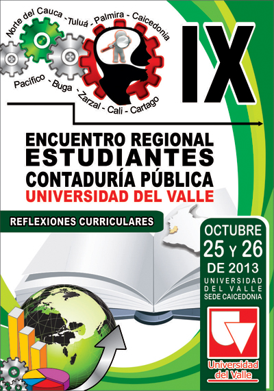

El presente documento sustenta desde el punto de vista académico la realización del IX Encuentro Regional de Estudiantes de Contaduría Pública de la Universidad del Valle. Este evento surge de la necesidad de convocar a los estudiantes del Programa Académico de Contaduría Pública de las distintas sedes, para la creación de un espacio de desarrollo y reconocimiento como comunidad académica estudiantil. Este año, en su IX versión, este evento pretende propiciar la reflexión estudiantil sobre el currículo del programa, entendido como un todo enunciador de la razón de ser de la disciplina contable , desde una visión crítica y compleja.
Reflexión que se configura como una herramienta necesaria para seguir aportando al debate sobre la Reforma curricular del Programa Académico de Contaduría Pública.
Tradicionalmente el programa de Contaduría Pública ha tenido una gran representatividad dentro del sistema de regionalización de la Universidad del Valle, haciendo presencia en ocho de las nueve sedes regionales de la Universidad; así, los Encuentros Regionales de Estudiantes de Contaduría Pública de la Universidad del Valle se configuran como un espacio fundamental para la integración del Programa a nivel regional.
Basados en un formación integral y concientes del impacto de nuestros profesionales a nivel regional y nacional, el programa concentra esfuerzos para dar respuesta a los retos que se plantean desde la academia, la profesión y el entorno. Por ello y en el marco del proceso de reforma curricular, el encuentro se constituye en un espacio fundamental para dar voz a los estudiantes y en una oportunidad para que participen de forma activa y divulguen los trabajos que en materia de investigación formativa han desarrollado.
Finalmente, la realización de actividades extracurriculares es importante para la formación integral de los estudiantes en la medida en que se potencia la construcción de competencias y en la formación de profesionales idóneos, éticos y comprometidos con un mejor país.
Propiciar un espacio académico para la reflexión de los estudiantes de Contaduría Pública de la Universidad del Valle entorno al currículo del programa.
* Estimular la participación crítica alrededor de los diferentes aspectos curriculares del PACP: saber contable, sistemas conceptuales de formación y contexto ideológico-social.
* Socializar los resultados de los procesos de investigación formativa en el marco del Encuentro.
* Contrastar la dimensión curricular del PACP con las nuevas exigencias del el saber contable, la profesión y el contexto.
El IX Encuentro Regional de Estudiantes de Contaduría Pública se desarrollá desde una perspectiva académica cuyo eje vinculante es la reflexión sobre los diferentes aspectos curriculares del PACP: saber contable, sistemas conceptuales de formación y contexto ideológico-social.
Para ello se desarrollaran dos conferencias centrales y un foro: una sobre la Contaduría Internacional y la segunda sobre saber contable y el foro sobre Educación Contable.
El IX Encuentro Regional de Estudiantes metodológicamente concentrará su trabajo en cinco mesas: Educativa, Normativo, Socio-Ambiental, Político-Económica y Teoría e Historia de la Contabilidad.
Los estudiantes presentarán sus ensayos para que sean evaluados por un Comité Académico, que elegirá los 10 mejores, dos por comisión.
A continuación se presentan las posibles temáticas que podrán ser abordadas en cada una de las mesas:
Alcance
A. Mesa Educativa
* Reflexiones sobre la didáctica y los modelos pedagógicos en el PACP.
* Estado del arte de las publicaciones sobre educación contable.
* Análisis del Currículo a la luz del PEP.
* Análisis de la interdisciplinariedad en el currículo del PACP.
* Perspectivas generales de los estudiantes sobre el currículo de contaduría pública.
B. Mesa Normativa
* Reflexiones sobre la Incidencia de la norma en el proceso formativo de los estudiantes del PACP.
* Estado actual del currículo del PACP en lo referente a los Estándares Internacionales.
* Estado del arte de las publicaciones sobre IFRS.
* Análisis de la relación del Currículo del PACP con la normatividad a la luz del PEP.
C. Mesa Socio – Ambiental
* Rol de la contabilidad en la sociedad.
* Estado actual del componente Socio-Ambiental en el PACP.
* Estado del arte de las publicaciones sobre contabilidad social y ambiental.
* Análisis del Componente Socio-Ambiental a la luz del PEP.
* Perspectivas generales de los estudiantes sobre el componente Socio-Ambiental en el PACP.
D. Mesa Político – Económica
* Reflexiones sobre el estado actual de los componentes político y económico en el PACP.
* Estado del arte de las publicaciones sobre la relación de la contabilidad con la política y la economía.
* Perspectivas del PEP a la luz de los componentes político y económico.
* Estado actual del componente de Contabilidad Pública en el currículo del PACP.
* Análisis de contextos locales (problemas colombianos, herencia cultural) y su relación con la contabilidad y la contaduría.
E. Mesa Teoría e Historia de la contabilidad
* Estado del arte de las publicaciones sobre los componentes teórico e histórico de la contabilidad.
* Análisis de los componentes teórico e histórico a la luz del PEP.
* Relación interdisciplinar de los componentes teórico e histórico de la Contaduría y la Contabilidad.
* Perspectivas generales de los estudiantes sobre los componentes teórico e histórico en el PACP.
* Relación entre teoría y práctica de la contabilidad.
Como tipos de documento a presentar se propone el ensayo, debido a su versatilidad y a la posibilidad de articular la opinión argumentada de los estudiantes, con las convenciones propias del rigor académico.
Los documentos a presentar en el Encuentro deben tener una extensión máxima de 10 páginas, sin contar las páginas referencias bibliográficas ni la página de presentación; la página de presentación debe incluir el título del documento y un resumen de menos de 250 palabras. Para las referencias bibliográficas puede usarse el modelo de citación a pie de página (Icontec) o el modelo Autor: Año (normas APA), dichas referencias deben ser de libros o de artículos académicos. Se aceptan trabajos individuales o grupales (máximo 3 estudiantes).
Los trabajos deben ser enviados al correo contaduría.publica@correounivalle.edu.co, el archivo del documento debe presentarse con seudónimo en la página de presentación y en un archivo aparte debe enviarse el título del documento, el seudónimo del autor y la sede a la que pertenece el autor, además debe adjuntarse el tabulado de matrícula de los autores.
La fecha máxima para la recepción de ponencias es el 4 de Octubre de 2013. Los evaluadores entregarán la evaluación definitiva el día 17 de octubre y los resultados serán publicados el 18 de Octubre.
Para ver la programación, de click aquí.
7. Presentación académica por parte de los coordinadores del PACP de cada una de las sedes
En el marco del evento se realizará una reunión académica con los Coordinadores del PACP de cada una de las sedes. En dicho espacio cada coordinador deberá presentar un documento no mayor a tres páginas donde presente las particularidades del perfil del Contador Público de su sede; dicho documento, debe respetar las normas académicas y ser propositivo en lo que refiere al perfil del Contador Público teniendo en cuenta los contextos empresariales, sociales, económicos y políticos de cada región.
Programa Académico de Contaduría Pública
Facultad de Ciencias de la Administración
Universidad del Valle, Campus San Fernando
Calle 4B N° 36-00, barrio San Fernando
Edificio 124, espacio 006
Costo: $65.000 (antes del viernes 11 de octubre de 2013) y $70.000 (entre sábado 12 y viernes 18 de octubre).
Incluye: libreta, bolígrafo, carpeta, manilla, camiseta, alojamiento y alimentación (2 desayunos, 2 almuerzos, 1 cena, 3 refrigerios), y toda la actividad académica, lúdica y deportiva.